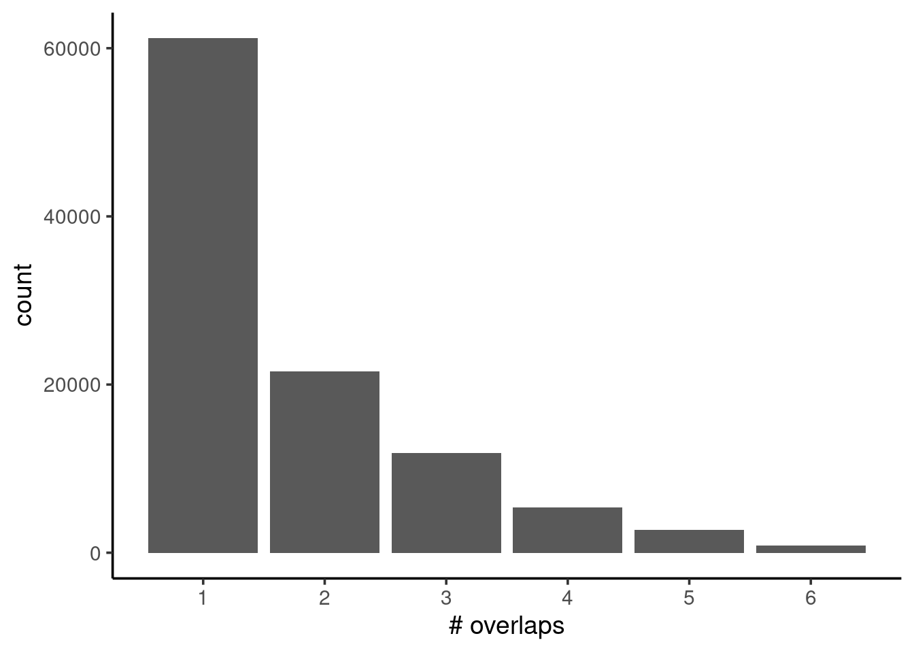
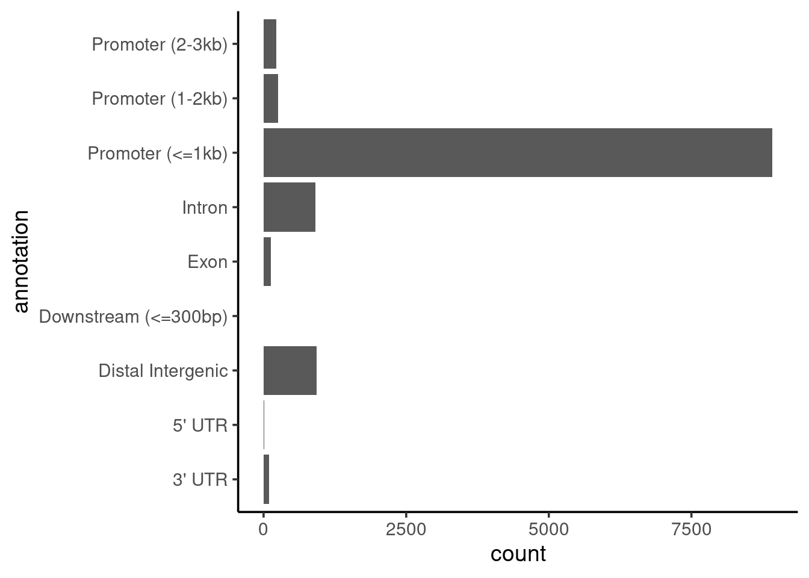

4 Exploring peak ranges
- Import and manipulate peak ranges with dedicated R/Bioconductor packages.
- Become familiar with
GRangesobjects and how to use them for interval-based operations. - Calculate and visualise peak occupancy across replicates.
- Annotate peaks based on known gene annotations.
4.1 Peak ranges
Although the nf-core/chipseq workflow generates a peak consensus BED file, it is useful to know how to read and manipulate peak files ourselves. For example, we may want to change our criteria for defining a consensus peak (e.g. require an overlap across more replicates), annotate our peaks, or filter them based on different criteria.
In this section, we will see how we can achieve this using dedicated R/Bioconductor packages, designed to work with genomic interval data. The main object used to represent genome intervals in R is called GRanges, which is part of the Bioconductor GenomicRanges package.
This object requires at least three pieces of information:
- chromosome names (
seqnames); - interval start and end positions (
ranges); - and strand orientation, either
+forward or-reverse (strand).
In addition, further columns can store additional information, such GC content in the interval, gene annotations overlapping that interval, etc. Here is an example of a simple GRanges object:
GRanges object with 10 ranges and 2 metadata columns:
seqnames ranges strand | score GC
<Rle> <IRanges> <Rle> | <integer> <numeric>
a chr1 101-111 - | 1 1.000000
b chr2 102-112 + | 2 0.888889
c chr2 103-113 + | 3 0.777778
d chr2 104-114 * | 4 0.666667
e chr1 105-115 * | 5 0.555556
f chr1 106-116 + | 6 0.444444
g chr3 107-117 + | 7 0.333333
h chr3 108-118 + | 8 0.222222
i chr3 109-119 - | 9 0.111111
j chr3 110-120 - | 10 0.000000
-------
seqinfo: 3 sequences from example genomeHere is a quick summary of functions used to access information from GRanges objects (the example code assumes the object is called gr):
# total number of intervals
length(gr)[1] 10# sequence names (usually chromosomes)
# with number of intervals for each
seqnames(gr)factor-Rle of length 10 with 4 runs
Lengths: 1 3 2 4
Values : chr1 chr2 chr1 chr3
Levels(3): chr1 chr2 chr3# sequence names only
seqlevels(gr)[1] "chr1" "chr2" "chr3"# sequence (chromosome) lengths
seqlengths(gr) chr1 chr2 chr3
1000000 200000 10000 This type of object is ideal to represent ChIP peak calls, such as those identified by the MACS software. In the following sections we will show a concrete example of this in action.
4.2 Import peak files
To start our analysis, we start by loading the packages we will use:
# Packages ----
# load packages
library(rtracklayer) # for importing BED/GFF/etc.
library(plyranges) # for working with GenomicRanges
library(ChIPseeker) # to annotate peaks
library(profileplyr) # for profile heatmaps
library(ggplot2)
# change the default ggplot theme
theme_set(theme_classic(base_size = 14))The next step is to read information about our chromosome lengths, which is useful to make sure our GRanges object uses the correct information for our organism. We generated this information from our reference genome FASTA file and stored it as a tab-delimited file, which we read using standard R functions:
# Chromosome info ----
# read chromosome sizes (for GRanges annotation)
chroms <- read.table("resources/GRCh38.109.chrom_sizes.tsv",
col.names = c("seqnames", "seqlengths"))
# order chromosomes in a more intuititve manner
# and retain only autosomes (no contigs, no MT)
chroms <- chroms[match(c(1:22, "X", "Y"), chroms$seqnames), ]
# if you had MT, you can use this code to set it as circular
chroms$is_circular <- chroms$seqnames == "MT"
# view table
chroms seqnames seqlengths is_circular
1 1 248956422 FALSE
12 2 242193529 FALSE
16 3 198295559 FALSE
17 4 190214555 FALSE
18 5 181538259 FALSE
19 6 170805979 FALSE
20 7 159345973 FALSE
21 8 145138636 FALSE
22 9 138394717 FALSE
2 10 133797422 FALSE
3 11 135086622 FALSE
4 12 133275309 FALSE
5 13 114364328 FALSE
6 14 107043718 FALSE
7 15 101991189 FALSE
8 16 90338345 FALSE
9 17 83257441 FALSE
10 18 80373285 FALSE
11 19 58617616 FALSE
13 20 64444167 FALSE
14 21 46709983 FALSE
15 22 50818468 FALSE
24 X 156040895 FALSE
25 Y 57227415 FALSEBecause we have several peak files generated by MACS (one per sample and antibody), we will use some programmatic tricks to import them automatically, rather than having to repeat our code dozens of times.
First, we find all the files that start with the word brd4_, followed by any characters (that’s what the .* means - it’s a regular expression), followed by broadPeak (to match the file extension of our MACS files).
# Import peaks ----
# list peak files
brd4_files <- list.files(path = "preprocessed/nf-chipseq",
pattern = "brd4_.*broadPeak",
recursive = TRUE,
full.names = TRUE)
names(brd4_files) <- gsub("_peaks.broadPeak", "",
basename(brd4_files))
brd4_files brd4_e2_rep1
"preprocessed/nf-chipseq/bwa/mergedLibrary/macs2/broadPeak/brd4_e2_rep1_peaks.broadPeak"
brd4_e2_rep2
"preprocessed/nf-chipseq/bwa/mergedLibrary/macs2/broadPeak/brd4_e2_rep2_peaks.broadPeak"
brd4_e2_rep3
"preprocessed/nf-chipseq/bwa/mergedLibrary/macs2/broadPeak/brd4_e2_rep3_peaks.broadPeak"
brd4_veh_rep1
"preprocessed/nf-chipseq/bwa/mergedLibrary/macs2/broadPeak/brd4_veh_rep1_peaks.broadPeak"
brd4_veh_rep2
"preprocessed/nf-chipseq/bwa/mergedLibrary/macs2/broadPeak/brd4_veh_rep2_peaks.broadPeak"
brd4_veh_rep3
"preprocessed/nf-chipseq/bwa/mergedLibrary/macs2/broadPeak/brd4_veh_rep3_peaks.broadPeak" We then apply the function import() to this list of files (using lapply()), which automatically generates GRanges objects from the BED files. We also make sure to bind them all together into a single GRanges object.
# take the peak files, and then...
brd4_ranges <- brd4_files |>
# ... loop through and import them, and then...
lapply(import,
format = "broadPeak") |>
# ... bind them all together
bind_ranges(.id = "sample")
brd4_rangesGRanges object with 76318 ranges and 6 metadata columns:
seqnames ranges strand | name
<Rle> <IRanges> <Rle> | <character>
[1] 1 778916-779334 * | brd4_e2_rep1_peak_1
[2] 1 923724-925774 * | brd4_e2_rep1_peak_2
[3] 1 940347-941420 * | brd4_e2_rep1_peak_3
[4] 1 958835-959478 * | brd4_e2_rep1_peak_4
[5] 1 966575-967254 * | brd4_e2_rep1_peak_5
... ... ... ... . ...
[76314] X 154019432-154019886 * | brd4_veh_rep3_peak_2..
[76315] X 154397616-154398734 * | brd4_veh_rep3_peak_2..
[76316] X 154411351-154412020 * | brd4_veh_rep3_peak_2..
[76317] X 154428300-154428959 * | brd4_veh_rep3_peak_2..
[76318] X 154478146-154478744 * | brd4_veh_rep3_peak_2..
score signalValue pValue qValue sample
<numeric> <numeric> <numeric> <numeric> <Rle>
[1] 12 3.27391 3.64994 1.20458 brd4_e2_rep1
[2] 27 4.32637 5.48032 2.74516 brd4_e2_rep1
[3] 21 3.98874 4.85482 2.18338 brd4_e2_rep1
[4] 18 3.75835 4.45139 1.84186 brd4_e2_rep1
[5] 24 4.13079 5.13008 2.44575 brd4_e2_rep1
... ... ... ... ... ...
[76314] 17 4.20761 5.26363 1.73490 brd4_veh_rep3
[76315] 26 4.67337 6.33105 2.65508 brd4_veh_rep3
[76316] 28 4.90174 6.59650 2.85383 brd4_veh_rep3
[76317] 18 4.27710 5.40107 1.85129 brd4_veh_rep3
[76318] 16 4.13966 5.13316 1.62427 brd4_veh_rep3
-------
seqinfo: 54 sequences from an unspecified genome; no seqlengthsFinally, we do some tidying up, by keeping only chromosomes of interest (we get rid of contigs and the mitochondrial genome, for example) and adding genome information to our GRanges.
# subset ranges to contain only main chromosomes
brd4_ranges <- brd4_ranges[seqnames(brd4_ranges) %in% chroms$seqnames, ]
seqlevels(brd4_ranges) <- chroms$seqnames
brd4_ranges <- set_genome_info(brd4_ranges,
genome = "GRCh38",
seqnames = chroms$seqnames,
seqlengths = chroms$seqlengths,
is_circular = chroms$is_circular)You may have noticed earlier, when we loaded our packages, that we’re using a package called plyranges. This package implements some functions from the popular data manipulation package dplyr, but for GRanges (docs). For example, here we use the function mutate() to add a new column, indicating which treatment our samples belong to:
4.3 Peak occupancy
Now that we have our GRanges object, we can calculate the coverage across intervals of our genome, i.e. how many intervals in our genome are covered 1, 2, 3, 4, etc. times. In our case, this is equivalent to asking how many samples have overlapping peaks in a given interval.
We do this using the compute_coverage() function (notice how we also use the filter() function, analogous to the dplyr::filter() function to subset rows of our GRanges based on a condition):
# Coverage ranges ----
# calculate coverage across genome
brd4_coverage <- brd4_ranges |>
compute_coverage()
# visualise occupancy rates
brd4_coverage |>
# remove intervals with no coverage at all
filter(score > 0) |>
# convert to data.frame
as.data.frame() |>
# barplot of counts for each coverage score
ggplot(aes(x = score)) +
geom_bar() +
scale_x_continuous(breaks = 1:6) +
labs(x = "# overlaps")
We can see from our barplot that the frequency drops substantially from 1 to 2 overlaps, by more than half. This may indicate some quality issues with our samples, for example due to unequal FRiP scores (fraction of reads mapped to called peaks), which we’ve seen was an issue from our nf-core/chipseq MultiQC report.
We can now generate a set of consensus peaks by doing the following:
- identify intervals that have a coverage of at least 2;
- filter our original intervals based on the coverage > 2 intervals;
- optionally, we also merge intervals within 1kb of each other (you can adjust this, based on your knowledge of the biology).
# get intervals with coverage >= 2
brd4_coverage2 <- brd4_coverage |>
filter(score >= 2)
# create consensus peak intervals
brd4_consensus <- brd4_ranges |>
# filter to retain ranges with enough coverage
filter_by_overlaps(brd4_coverage2) |>
# merge ranges within 1kb of each other
reduce(min.gapwidth = 1e3)Using this method, we have 11481 intervals.
At this stage, we could export these intervals as a BED file, to use in other downstream analysis, or to load into IGV:
write_bed(brd4_consensus, "results/brd4_consensus_overlap2.bed")4.4 Annotate peaks
Another useful task we can do is to annotate our peaks based on known gene annotations. We’ve already seen how this is done by the nf-core/chipseq workflow (which uses the HOMER software behind the scenes), but we’ll demonstrate how you can also annotate GRanges objects from within R.
The first thing we do is import the GTF file as a TxDb object (this is another standard Bioconductor object used to store gene annotations in a database-like object). We then use the annotatePeak() function (part of the ChIPseeker package), which adds columns to our GRanges object with the annotation outcome.
# Annotate peaks ----
# import GTF as a TxDb object
genes <- GenomicFeatures::makeTxDbFromGFF("resources/GRCh38.109.gtf.gz")
# we use ChIPseeker to annotate the peaks
brd4_consensus <- brd4_consensus |>
annotatePeak(tssRegion = c(-3e3, 3e3),
TxDb = genes) |>
# convert back to GRanges
as.GRanges()>> preparing features information... 2023-07-19 09:15:40
>> identifying nearest features... 2023-07-19 09:15:41
>> calculating distance from peak to TSS... 2023-07-19 09:15:41
>> assigning genomic annotation... 2023-07-19 09:15:41
>> assigning chromosome lengths 2023-07-19 09:15:59
>> done... 2023-07-19 09:15:59 brd4_consensusGRanges object with 11481 ranges and 9 metadata columns:
seqnames ranges strand | annotation geneChr
<Rle> <IRanges> <Rle> | <character> <integer>
[1] 1 778688-779334 * | Promoter (<=1kb) 1
[2] 1 923557-926380 * | Promoter (<=1kb) 1
[3] 1 939974-943307 * | Promoter (<=1kb) 1
[4] 1 958835-959478 * | Promoter (<=1kb) 1
[5] 1 966550-967254 * | Promoter (<=1kb) 1
... ... ... ... . ... ...
[11477] X 154762455-154764031 * | Promoter (<=1kb) 23
[11478] X 155026794-155027456 * | Promoter (<=1kb) 23
[11479] X 155070742-155071909 * | Promoter (<=1kb) 23
[11480] X 155216022-155216875 * | Promoter (<=1kb) 23
[11481] X 155612452-155613133 * | Promoter (<=1kb) 23
geneStart geneEnd geneLength geneStrand geneId
<integer> <integer> <integer> <integer> <character>
[1] 778747 805994 27248 1 ENSG00000237491
[2] 923923 944574 20652 1 ENSG00000187634
[3] 940346 942173 1828 1 ENSG00000187634
[4] 944203 959256 15054 2 ENSG00000188976
[5] 966502 975008 8507 1 ENSG00000187583
... ... ... ... ... ...
[11477] 154762742 154777688 14947 1 ENSG00000130826
[11478] 155026844 155060304 33461 1 ENSG00000165775
[11479] 155061622 155071136 9515 2 ENSG00000182712
[11480] 155216460 155239841 23382 1 ENSG00000155959
[11481] 155612572 155738214 125643 1 ENSG00000168939
transcriptId distanceToTSS
<character> <numeric>
[1] ENST00000655765 0
[2] ENST00000616016 0
[3] ENST00000478729 0
[4] ENST00000327044 0
[5] ENST00000379409 48
... ... ...
[11477] ENST00000620277 0
[11478] ENST00000369498 0
[11479] ENST00000369484 0
[11480] ENST00000286428 0
[11481] ENST00000676089 0
-------
seqinfo: 24 sequences from an unspecified genome; no seqlengthsThis new annotate object can be used, for example, to visualise how many peaks have each annotation:
# barplot of annotations
brd4_consensus |>
# remove gene IDs from exon/intro annotations for cleaner plot
mutate(annotation = gsub("Exon .*", "Exon", annotation)) |>
mutate(annotation = gsub("Intron .*", "Intron", annotation)) |>
# make plot
as.data.frame() |>
ggplot(aes(annotation)) +
geom_bar() +
coord_flip()
We can see that most peaks are within 1kb of the promoter region of the annotated transcripts. We might expect this to be the case, as we’d seen earlier from the read distribution profiles (on the MultiQC report from nf-core/chipseq) that BRD4 seems to occur upstream of the TSS.
4.5 Exercise: H2Bub1 peaks
4.6 Cross-reference datasets
Often ChIP-seq experiments might be complemented with RNA-seq experiments, to assess changes in gene expression in comparable conditions to those where the ChIP experiment was performed. If that is the case, we may want to cross-reference our annotated peaks with the results from the RNA-seq analysis.
We have obtained a list of differentially expressed genes between control and siBRD4 MCF7 cells from the supplementary data in Nagarajan et al. 2017. This should give an indication of which genes change their expression in a BRD4-dependent manner, which may be relevant for us to further filter and/or interpret our peaks.
In the code below we start by reading the CSV file with differentially expressed gene IDs, which we then use to filter our annotated consensus peak list.
We are left with 397 intervals.
We will continue working with this subset of peaks in the next section, to compare the ChIP profiles between differentially expressed genes and other genes.